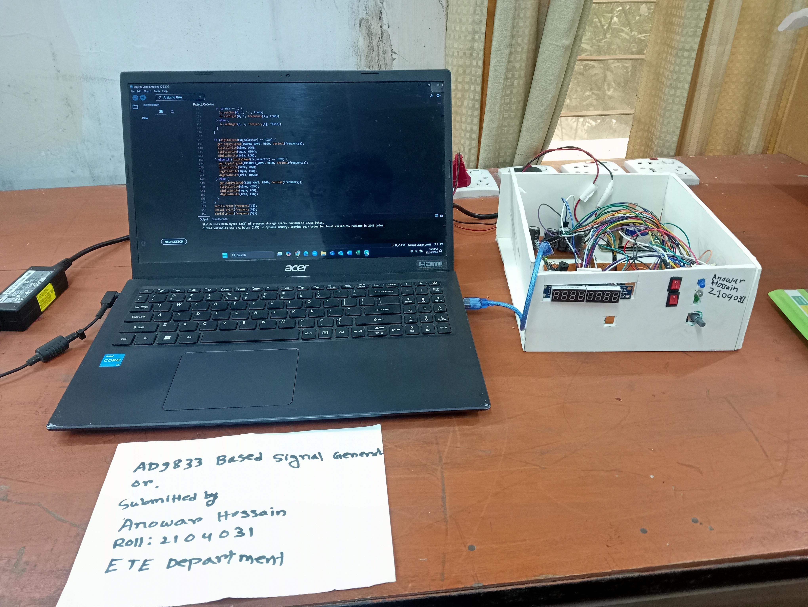

Projects

Ad9833 Based Signal Generator.
The AD9833 is a low-power, programmable waveform generator that can produce sine, triangle, and square waves. It is a digital-to-analog signal generator controlled through an I2C or SPI interface. The chip uses a phase accumulator and a digital-to-analog converter (DAC) to generate high-precision, frequency-programmable waveforms. The frequency of the output waveform can be controlled by changing the phase accumulator value. It is often used in applications such as signal processing, testing, and communication systems, where precise waveform generation is needed.
AI Based Drone.
On the running this project.

Project Three
Short description of the project.